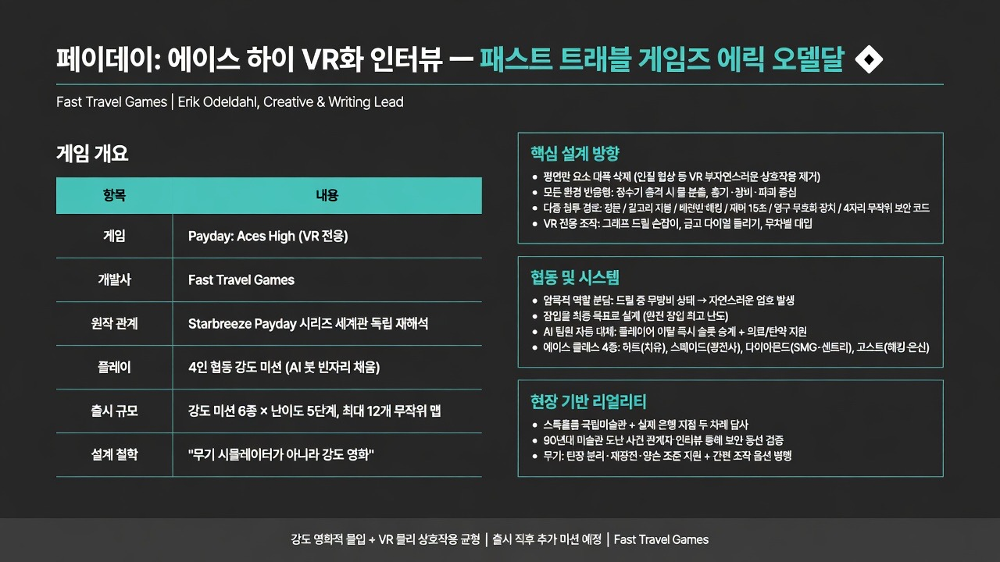

UploadVRMORNING DIGEST · 2026-08-25 · UploadVR🎬 영상
페이데이: 에이스 하이 VR화 인터뷰 — 패스트 트래블 게임즈 에릭 오델달

01핵심 개요 (표)
항목
내용
게임
페이데이: 에이스 하이 (Payday: Aces High) — VR 전용 신작
개발사
패스트 트래블 게임즈 (Fast Travel Games) — 뱀파이어 더 마스커레이드: 저스티스, 오블리비언: 애프터매쓰 개발
원작 관계
스타브리즈(Starbreeze)의 페이데이 시리즈(1·2·3) 세계관을 VR로 재해석, 평면 스크린판과는 독립적인 자체 강도단 등장
인터뷰이
에릭 오델달(Erik Odeldahl) — 패스트 트래블 게임즈, 크리에이티브/라이팅 리드
진행자
마이크 존슨, 제임스 타티오(UploadVR)
플레이 방식
4인 협동 강도 미션, AI 봇으로 빈 자리 채움 지원
콘텐츠 규모
출시 시 강도 미션 6종 × 난이도 5단계, 맵 최대 12개 무작위 배치, 출시 직후 추가 강도 미션 예고
핵심 설계 철학
"무기 시뮬레이터가 아니라 강도 영화"—영화적 몰입 + VR 물리 상호작용의 균형
02핵심 기능/내용 구조
평면 스크린 요소의 선택적 제거: 인질 협상처럼 VR에서 NPC와 물리적으로 상호작용하면 어색해지는 요소는 개발 초기에 과감히 삭제하고, 대신 총기·장비·환경 조작에 집중했다 (00:06).
손으로 만질 수 있는 반응형 환경: 마스크를 써야만 상호작용 가능했던 평면판과 달리, VR에서는 정수기를 쏘면 물이 빠지는 식으로 "쏘면 반응한다"는 원칙을 전 요소에 적용했다 (00:06).
다중 침투 경로 설계: 정문 돌파, 갈고리로 지붕 진입, 배전반으로 카메라 무력화, 재머(약 15초 무력화)나 1회용 영구 무효화 장치 사용, 무작위 위치의 4자리 보안 코드 탐색 등 같은 강도 미션에도 여러 접근법을 제공한다 (06:24).
손맛 있는 도구 인터랙션: 그래프 곡선에 맞춰 손잡이를 움직이는 드릴 미니게임, 손으로 돌리는 금고 다이얼(무차별 대입 또는 암호 입력) 등 VR 전용 조작 메커니즘을 다수 구현했다 (06:24).
역할 분담이 자연 발생하는 협동 설계: 한 명이 드릴을 쓰면 무방비 상태가 되므로 다른 인원이 계단이나 모퉁이를 지키는 식으로, 강제 규칙 없이 협동이 유기적으로 생겨나도록 설계했다 (13:57, 안전 가옥 지도에서 사전 작전 계획 가능).
잠입을 최종 목표(엔드게임)로 설정: 완전 잠입 클리어가 가장 어렵고 협동을 많이 요구하므로 QA에 많은 시간을 투입해 "불가능한 목표를 만들지 않았는지" 검증했으며, 전투 위주 플레이도 동등하게 지원한다 (17:37).
AI 팀원 및 이탈 대체 시스템: 항상 4인 강도단 구성을 유지하도록 빈 자리를 AI가 채우며, 체력 부족 시 의료 가방, 탄약 부족 시 탄약을 자동 지원한다. 실제 플레이 중 진행자 헤드셋이 꺼지자 AI가 즉시 그 자리를 대신했다 (19:41).
히어로 슈터형 캐릭터·빌드 시스템: 에이스(하트·스페이드·다이아몬드·고스트) 각각 고유 무기·스킬·전형(치유형, 광전사형, SMG/센트리건 전문가, 해커/은신형)을 갖고 있어 무기·장비·배치형 장치·스킬 조합이 강도마다 전술적 선택이 된다 (27:32).
아케이드·시뮬레이션 균형 잡힌 무기 조작: 탄창 분리/재장전, 양손 조준, 조준경 사용 등 깊이 있는 상호작용을 넣되, 조준 보정 로직과 버튼 연타형 간편 조작도 함께 제공해 숙련도와 무관하게 몰입감을 유지한다 (32:53, 대사 인용 기준 추정).
실제 현장 답사 기반 리얼리티: 스톡홀름 국립미술관(고전 박물관의 모티브)과 실제 존재하는 은행 지점을 두 차례 답사했고, 미술관 90년대 도난 사건 관계자에게 보안 동선을 직접 문의하는 등 진정성 확보에 공을 들였다 (25:37 전후 서술 구간).
03기술적 맥락
VR 물리 인터랙션의 제약과 대응: VR은 손으로 직접 조작하는 몰입감을 주지만, NPC 인질극처럼 애니메이션이 부자연스러워지기 쉬운 상호작용은 오히려 게임을 "어설프게" 보이게 만든다. 패스트 트래블은 이런 리스크가 큰 요소를 삭제하고, 총기·폭발물·환경 파괴 등 물리 반응이 명확한 영역에 리소스를 집중하는 전략을 취했다.
협동 플레이의 암묵적 설계(implicit co-op): 명시적 역할 배정 UI 없이, 한 사람이 특정 행동(드릴링)을 하면 자동으로 취약해지는 구조를 통해 플레이어들이 스스로 엄호·정찰 역할을 나누게 만드는 방식이다. 이는 별도 튜토리얼 없이 협동을 유도하는 암묵적 디자인 패턴이다.
난이도-무작위성 결합 구조: 보안 카메라 수, 적 종류, 코드 위치가 난이도와 시드에 따라 절차적으로 달라져 재플레이 가치를 만든다. 다만 구체적인 난이도 알고리즘(예: 시드 생성 방식)은 인터뷰에서 공개되지 않았다.
AI 대체 시스템의 네트워크 처리: 인간 플레이어 이탈 시 AI가 즉시 해당 슬롯을 승계하는 방식은 매치 지속성을 위한 설계이나, 정확한 매치메이킹/세션 유지 기술 스펙은 언급되지 않았다.
04전략적 의미
IP 활용 VR 스튜디오로서의 포지셔닝 강화: 패스트 트래블 게임즈는 뱀파이어 더 마스커레이드, 오블리비언 애프터매쓰에 이어 페이데이까지, 기존 강력한 IP를 VR 전용 경험으로 재해석하는 전략을 반복하고 있다. 이는 자체 IP 개발보다 리스크가 낮고 기존 팬덤을 초기 사용자로 확보할 수 있는 방식이다.
원작과 차별화된 독자적 세계관 구축: 평면 스크린판 강도단을 그대로 이식하지 않고 '에이스' 4인조라는 독립 캐릭터·스토리를 신규 창작함으로써, VR판이 단순 이식이 아닌 별도 콘텐츠로서 확장성을 갖도록 설계했다.
라이브 서비스형 콘텐츠 로드맵 예고: 출시 시점 6개 강도 미션에서 그치지 않고 "출시 직후 새 강도 미션"과 비공개 추가 콘텐츠를 예고해, VR 게임에서도 장기 리텐션을 겨냥한 라이브 서비스 모델을 적용하려는 의도가 드러난다.
VR 협동 게임의 어려움 검증 사례: 완전 잠입 클리어를 의도적으로 어렵게 설계하고 QA에 집중 투자한 점은, VR 협동 장르에서 '스킬 곡선'과 '보람'을 동시에 만족시키려는 업계 공통 과제에 대한 하나의 해법 사례로 읽을 수 있다.
05핵심 워크플로우 또는 비교표
접근 방식
필요 요건/도구
위험도
보상/특징
정면 돌파
없음(무기만)
높음(경보·교전 즉시 발생)
빠르지만 전투 위주, 초심자도 가능
지붕 진입(갈고리)
갈고리 장비
중간
우회 루트 확보, 은신 가능성 상승
배전반 카메라 무력화
배전반 위치 파악
중간(소음기 없이 시도 시 경보 위험)
카메라 시야 차단으로 은신 지속
재머(임시 무력화)
재머 장비(효과 약 15초)
낮음~중간
짧은 시간 특정 장치 무력화, 반복 사용 가능
영구 무효화 장치
1회용 특수 장치
낮음
해당 강도 동안 영구 적용, 단 1회 한정
코드 탐색
사무실 등 무작위 위치 수색
낮음(시간 소요)
보안실 진입 등 완전 은신 루트 확보
금고 강제 개방(드릴/천공)
드릴 미니게임
중간(무방비 상태 발생)
확실하지만 엄호 인력 필요
디지털 암호 해킹
은밀 침투 성공 후 암호 발견
높음(난이도 최상)
완전 잠입 클리어, 최고 난도이자 최고 보람
06활용 시나리오
VR 게임 기획자의 IP 이식 의사결정 참고: 원작의 인기 요소(NPC 인질극 등)라도 VR 하드웨어 특성상 몰입을 깨는 요소는 과감히 제거하고, 대신 물리 반응이 명확한 상호작용(사격→물 배수 등)에 집중하는 우선순위 결정 사례로 참고할 수 있다.
협동 게임 디자이너의 암묵적 역할 분담 설계 벤치마킹: 명시적 클래스 강제 없이, 특정 행동(드릴링)이 취약성을 유발하는 구조만으로 플레이어가 스스로 엄호·정찰 역할을 나누게 만드는 패턴은 다른 협동 게임(레이드, 익스트랙션 슈터 등)에도 응용 가능하다.
VR 게이머의 사전 기대치 설정: 완전 잠입 클리어가 가장 어렵고 시간이 오래 걸리는 '엔드게임' 콘텐츠로 설계되었다는 점을 알면, 신규 플레이어는 초반에는 전투 위주로 게임을 익히고 숙련 후 잠입에 도전하는 학습 곡선을 계획할 수 있다.
게임 라이팅/캐릭터 기획자의 참고 사례: 모터헤드의 'Ace of Spades'에서 영감을 받아 캐릭터를 만들고, 각 캐릭터가 "같은 메시지를 다른 방식으로 전달"하도록 설계한 라이팅 워크플로우는 앙상블 캐스트 기획 시 참고할 수 있다.
07현황 및 전망
인터뷰 시점 기준 '페이데이: 에이스 하이'는 출시일이 미공개 상태이며, 진행자 질문에도 개발사 측은 구체적 날짜를 밝히지 않고 "곧 소식이 있을 것"이라고만 답했다.
출시 시 강도 미션 6종, 난이도 5단계, 최대 12개 맵 무작위 배치로 시작하며, 출시 직후 신규 강도 미션 추가와 비공개 콘텐츠(마케팅팀 미공개)가 예고되어 라이브 서비스형 업데이트가 이어질 전망이다.
개발팀은 솔로 플레이(AI 팀원 활용)와 4인 협동 플레이 양쪽에 동등한 시간을 투자하고 있다고 밝혀, 출시 후에도 난이도 밸런스(특히 최고 난이도 오버킬 솔로 플레이)에 대한 지속적 조정이 있을 것으로 예상된다.
실제 은행·미술관 답사를 기반으로 한 맵 디자인은 향후 추가되는 강도 미션에서도 유지될 개연성이 높은 제작 원칙으로 언급됐다.
08용어 사전
용어
설명
페이데이(Payday) 시리즈
스타브리즈(Starbreeze) 개발, 4인 협동 은행/시설 강도를 소재로 한 평면 스크린 슈터 게임 시리즈(1·2·3편 존재)
패스트 트래블 게임즈
VR 전문 개발사. 뱀파이어 더 마스커레이드: 저스티스, 오블리비언: 애프터매쓰 VR판 등 기존 IP의 VR 이식작을 다수 제작
에이스(Aces)
페이데이: 에이스 하이에 등장하는 VR판 자체 강도단 4인조(하트·스페이드·다이아몬드·고스트 에이스) 명칭
재머(Jammer)
배치형 장치로, 지정 대상(카메라 등)의 작동을 약 15초간 일시 무력화하는 도구
영구 무효화 장치
해당 강도 진행 동안 특정 보안 기능을 영구적으로 비활성화하지만 1회만 사용 가능한 장치
오버킬(Overkill)
페이데이 시리즈에서 흔히 쓰이는 최고 난이도 등급 명칭
히어로 슈터(Hero Shooter)
캐릭터마다 고유 무기·스킬·역할이 부여되어 팀 구성 전략이 중요한 슈팅 게임 장르(오버워치 등이 대표적)
안전 가옥(Safehouse) 지도
강도 시작 전 미션 구조를 미리 확인하고 팀원과 역할·동선을 계획할 수 있는 로비형 인터페이스